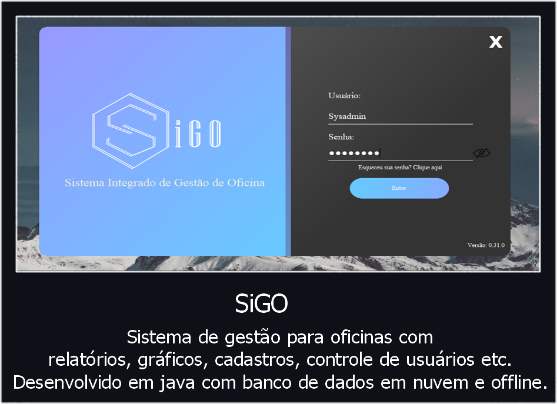

<div class="clearfix" align="center">

    

    <p class="text-justify lead text-center m-0" style="padding: 50px">
      Sistema Integrado de Gestão de Oficina - Totalmente desenvolvido em Java conectado primeiramente com o SQL Server do Microsoft Azure e posteriormente com o HyperSQL. Sistema desktop que conta com cadastros, emissões de documentos e gráficos.
    </p>

</div>